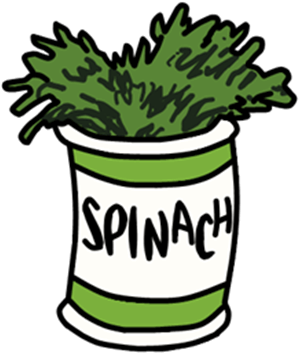
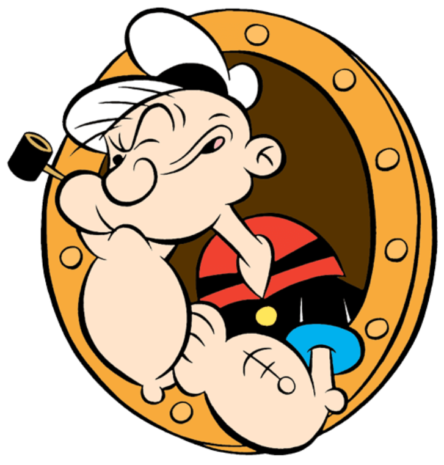
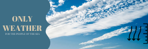
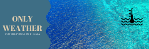

SNEAK PEAK
Why Popeye Weather App?
Up-to-date weather prognosis
In our application you will find the most up-to-date weather details. All you need to decide if this is a time for sailing!

Free and accesible through majority of mobile devices
You can download our application into any devices that works on Android or iOS.
Safety alerts for weather conditions
Our application will give you warning whenever you will be reaching areas in dangerous weather conditions.

Hints for sailor equipments
Our application will give you some hints what kind of equipment you need to prepare for different weather condition that you're planning to sail.
Air temperature
We want you to be well informed and be able to plan your activities in
longer intervals,
that is why we prepare for you the most reliable forecast in the whole internet !!! Air temperature is one of
the basic meteorological elements determining the thermal state of the atmosphere.
Data on air temperature are collected by meteorological stations. The measurement is made at a height of 2 m
above the ground using a thermometer,
sheltered from direct solar radiation in a meteorological cage. Maximum and minimum temperature are measured
using separate thermometers
- maximum and minimum thermometers, respectively.

Atmospheric pressure
Not only does it have a great impact on our well-being, but it is also a
basis for predicting other weather ingredients.
Atmospheric pressure, also known as barometric pressure (after the barometer), is the pressure within the
atmosphere of Earth. The standard atmosphere (symbol: atm)
is a unit of pressure defined as 101,325 Pa (1,013.25 hPa; 1,013.25 mbar), which is equivalent to 760 mm Hg,
29.9212 inches Hg, or 14.696 psi.[1] The atm unit is roughly equivalent to the mean sea-level atmospheric
pressure on Earth, that is, the Earth's atmospheric pressure at sea level is approximately 1 atm.
Wind
Wind is the flow of gases on a large scale. On the surface of the Earth,
wind consists of the bulk movement
of air. In outer space, solar wind is the movement of gases or charged particles from the Sun through space,
while planetary wind is the
outgassing of light chemical elements from a planet's atmosphere into space. Winds are commonly classified by
their spatial scale,
their speed, the types of forces that cause them, the regions in which they occur, and their effect. The
strongest observed winds
on a planet in the Solar System occur on Neptune and Saturn. Winds have various aspects: velocity (wind
speed);
the density of the gas involved; energy content or wind energy. Wind is also an important means of
transportation for seeds and small birds; with time things can travel thousands of miles in the wind.
Wave height
In physical oceanography, the significant wave height (SWH or Hs) is
defined traditionally as
the mean wave height (trough to crest) of the highest third of the waves (H1/3). Nowadays it is usually
defined as four times
the standard deviation of the surface elevation – or equivalently as four times the square root of the
zeroth-order moment
(area) of the wave spectrum. The symbol Hm0 is usually used for that latter definition. The significant wave
height may
thus refer to Hm0 or Hs; the difference in magnitude between the two definitions is only a few percent.
Cloud cover
Cloud cover (also known as cloudiness, cloudage, or cloud amount)
refers to the fraction of the sky obscured by
clouds when observed from a particular location. Okta is the usual unit of measurement of the cloud cover.
The cloud cover is correlated
to the sunshine duration as the least cloudy locales are the sunniest ones while the cloudiest areas are the
least sunny places.
The global cloud cover averages around 0.68 when analyzing clouds with optical depth larger than 0.1. This
value is lower (0.56) when
considering clouds with an optical depth larger than 2, and higher when counting subvisible cirrus clouds
Precipitation
In meteorology, precipitation is any product of the condensation of
atmospheric water vapour
that falls under gravity from clouds. The main forms of precipitation include drizzle, rain, sleet, snow, ice
pellets, graupel
and hail. Precipitation occurs when a portion of the atmosphere becomes saturated with water vapor (reaching
100% relative
humidity), so that the water condenses and "precipitates". Thus, fog and mist are not precipitation but
suspensions,
because the water vapor does not condense sufficiently to precipitate. Two processes, possibly acting
together, can
lead to air becoming saturated: cooling the air or adding water vapor to the air. Precipitation forms as
smaller droplets
coalesce via collision with other rain drops or ice crystals within a cloud. Short, intense periods of rain in
scattered
locations are called "showers."

Sea surface temperature
Sea surface temperature (SST) is the water temperature close to the
ocean's surface.
The exact meaning of surface varies according to the measurement method used, but it is between 1 millimetre
(0.04 in) and
20 metres (70 ft) below the sea surface. Air masses in the Earth's atmosphere are highly modified by sea
surface temperatures
within a short distance of the shore. Localized areas of heavy snow can form in bands downwind of warm water
bodies within
an otherwise cold air mass. Warm sea surface temperatures are known to be a cause of tropical cyclogenesis
over the
Earth's oceans. Tropical cyclones can also cause a cool wake, due to turbulent mixing of the upper 30 metres
(100 ft)
of the ocean. SST changes diurnally, like the air above it, but to a lesser degree. There is less SST
variation on
breezy days than on calm days. In addition, ocean currents such as the Atlantic Multidecadal Oscillation
(AMO),
can effect SST's on multi-decadal time scales,[4] a major impact results from the global thermohaline
circulation, which affects average SST significantly throughout most of the world's oceans.
Humidity
Humidity is the concentration of water vapour present in the air. Water
vapour, the
gaseous state of water, is generally invisible to the human eye. Humidity indicates the likelihood for
precipitation,
dew, or fog to be present. The amount of water vapour needed to achieve saturation increases as the
temperature increases.
As the temperature of a parcel of air decreases it will eventually reach the saturation point without adding
or losing water mass. The amount of water vapour contained within a parcel of air can vary significantly. For
example, a
parcel of air near saturation may contain 28 grams of water per cubic metre of air at 30 °C, but only 8 grams
of water
per cubic metre of air at 8 °C.
Do you want to sign up for premiere?
Tell us your email and you can be sure that you will not miss premiere
You will be notified of successful enrollment only once.
Please be
aware that we protect your data.